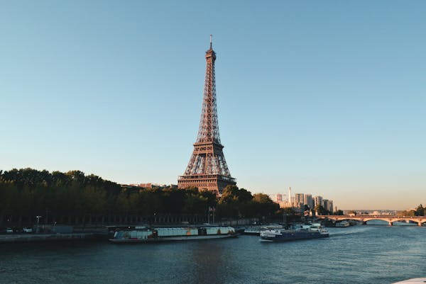
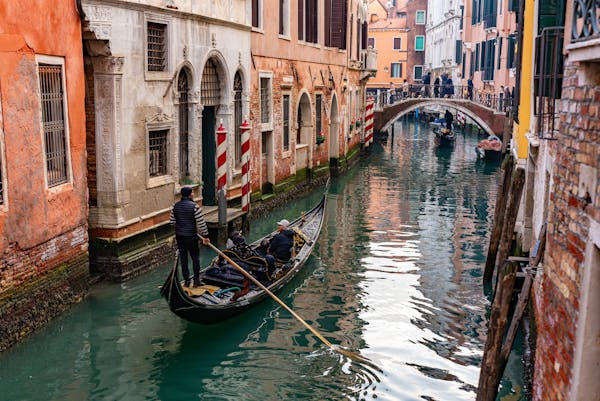
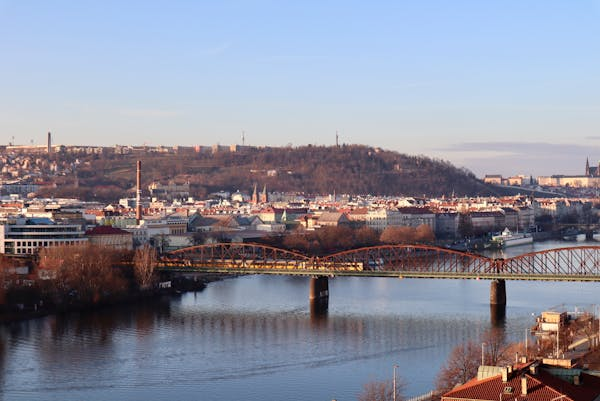

La "Ciudad de la Luz" es famosa por su romanticismo, su arquitectura icónica como la Torre Eiffel y sus elegantes bulevares.
Con sus canales serpenteantes, góndolas y palacios históricos, Venecia es una ciudad única y encantadora.
Conocida por sus templos antiguos, jardines zen y geishas, Kioto ofrece una experiencia cultural inolvidable.
Ubicada entre montañas y océanos, Ciudad del Cabo combina paisajes espectaculares con una rica herencia cultural.
Conocida como la "Ciudad de las Cien Torres", Praga deslumbra con su arquitectura gótica, castillos y encantadoras calles adoquinadas.
